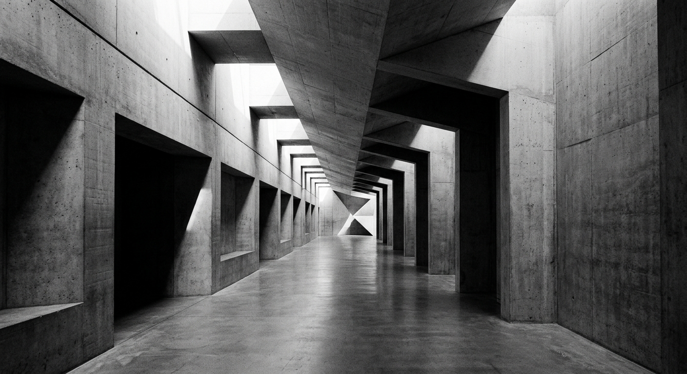
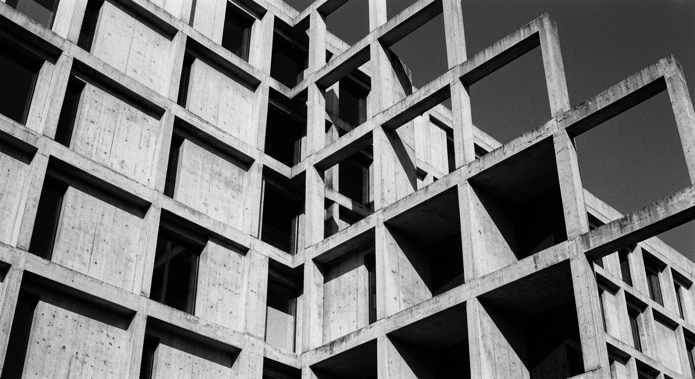
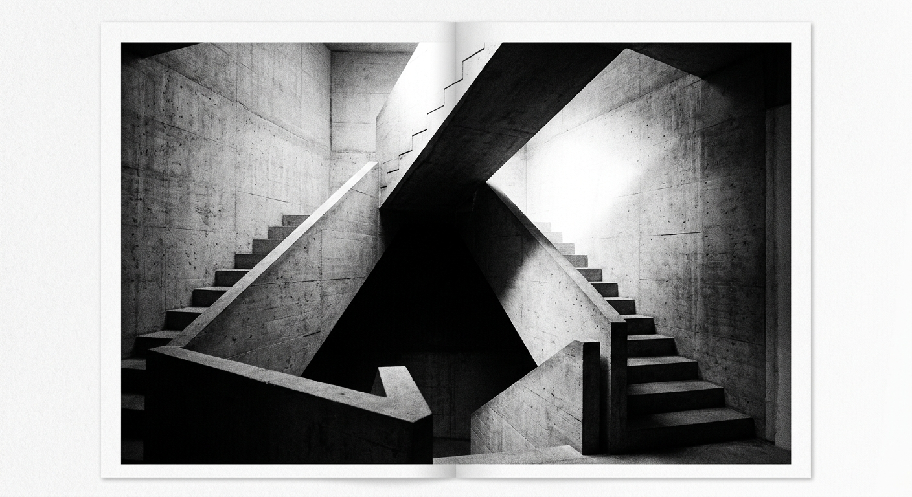
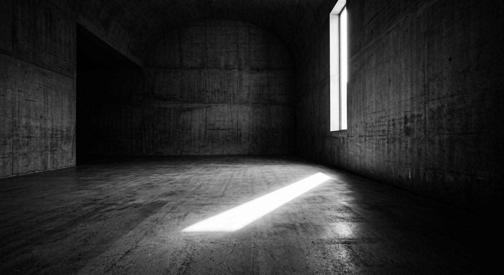
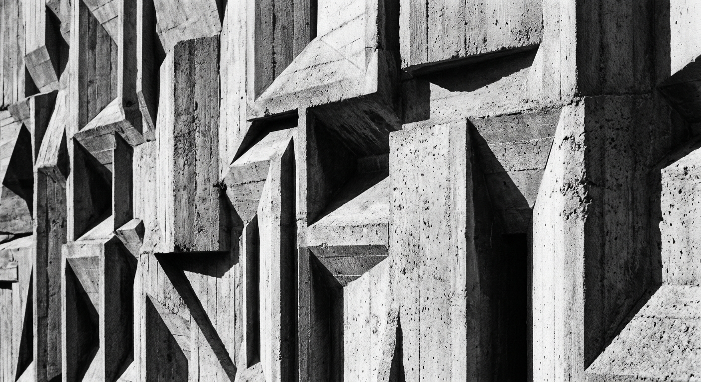

Architecture is not decoration applied to structure. At Axis, we begin with the physics of a site — its load paths, its shadows, its seismic character — and allow those forces to generate the geometry. Every hairline joint, every cantilever, every threshold is a consequence of honest material logic.
We have practiced this discipline across fourteen countries and forty-seven building typologies. The discipline does not waver. The language adapts: brutalist mass in Zurich, tensile precision in Tokyo, raw concrete in Berlin. The underlying grammar is identical.
A consultation takes 45 minutes. We ask about site, brief, and budget — and we tell you whether we are the right practice for your project. We decline work that is not suited to our methods.